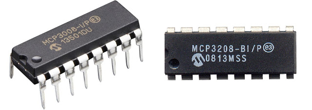

Analog-to-Digital Conversion
2016-04-17

Even though I have an MCP3208, which is a 12b ADC, I only get 10b of resolution out of these. Need to figure out why. They both appeared to work the same with no advantage either way.
Kernel Overlay
Setup of the overlay to load at boot:
sudo pico /boot/config.txt
dtparam=spi=on
dtoverlay=mcp3008:spi0-0-presentThen using the polling C code below:
root@rpi3:~/mcp3008-poll# ./mcp3008-poll -d0 0
(use ctrl-c to stop)
ADC 0
Read 1036000: 621 ^C
Summary
Elapsed: 56.93 seconds
Reads: 1037028
Rate: 18215.51 HzPython
import time
# Import SPI library (for hardware SPI) and MCP3008 library.
import Adafruit_GPIO.SPI as SPI
import Adafruit_MCP3008
# Hardware SPI configuration:
SPI_PORT = 0
SPI_DEVICE = 0
mcp = Adafruit_MCP3008.MCP3008(spi=SPI.SpiDev(SPI_PORT, SPI_DEVICE))
print('Reading MCP3008 values, press Ctrl-C to quit...')
# Print nice channel column headers.
print('| {0:>4} | {1:>4} | {2:>4} | {3:>4} | {4:>4} | {5:>4} | {6:>4} | {7:>4} |'.format(*range(8)))
print('-' * 57)
# Main program loop.
while True:
# Read all the ADC channel values in a list.
values = [0]*8
for i in range(8):
# The read_adc function will get the value of the specified channel (0-7).
values[i] = mcp.read_adc(i)
# Print the ADC values.
print('| {0:>4} | {1:>4} | {2:>4} | {3:>4} | {4:>4} | {5:>4} | {6:>4} | {7:>4} |'.format(*values))
# Pause for half a second.
time.sleep(0.5)